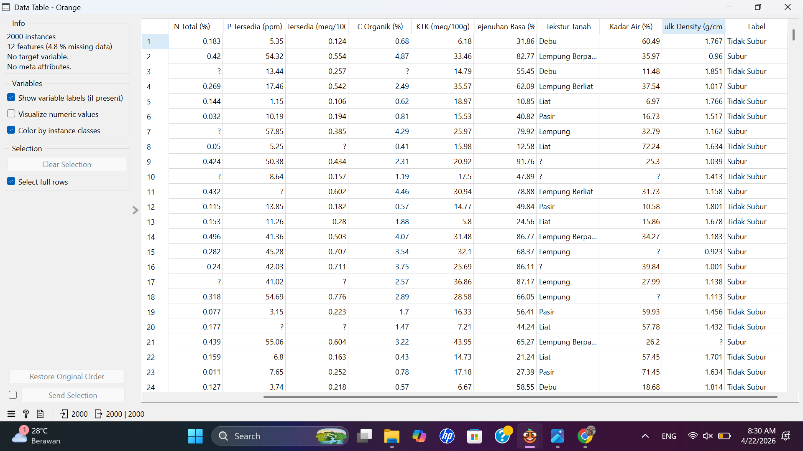
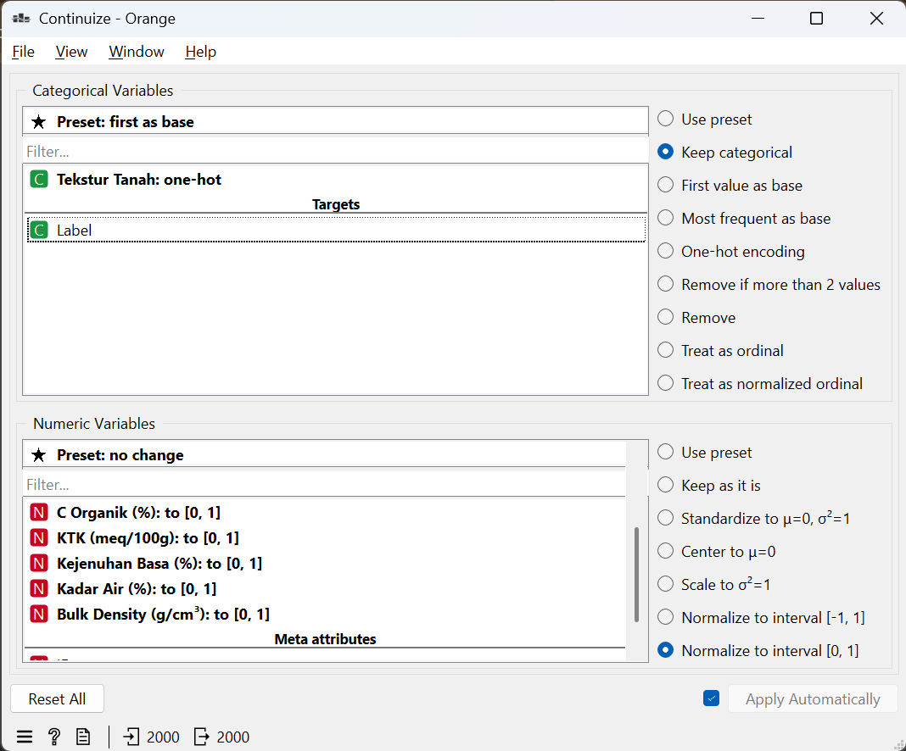
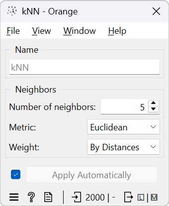
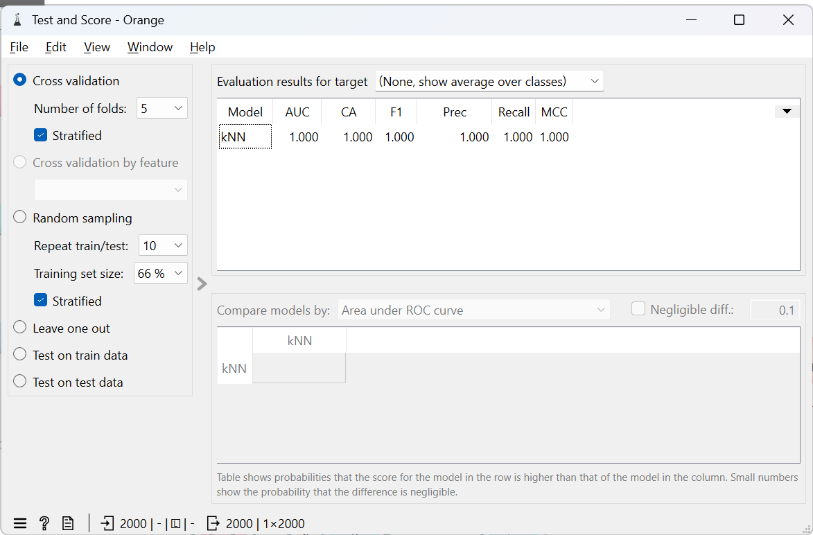
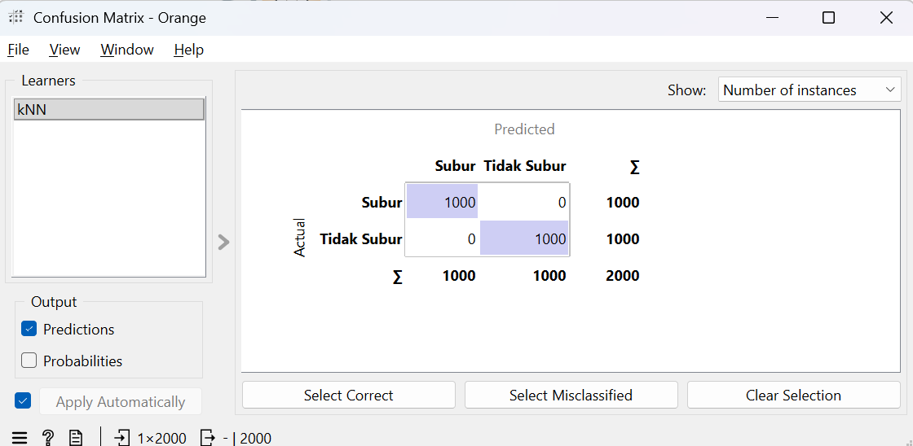

uts#
🌱 Analisis Klasifikasi Kesuburan Tanah Menggunakan KNN#
1. Pendahuluan#
Penelitian ini bertujuan untuk menganalisis tingkat kesuburan tanah berdasarkan parameter kimia dan fisik menggunakan metode K-Nearest Neighbors (KNN).
Dataset terdiri dari beberapa fitur penting seperti:
pH tanah
Nitrogen (N)
Fosfor (P)
Kalium (K)
C-organik
KTK
Kejenuhan basa
Tekstur tanah
Kadar air
Bulk density
📸 data_tanah#

2. Preprocessing Data#
Tahapan preprocessing yang dilakukan:
Normalisasi data numerik ke rentang [0,1]
Transformasi variabel kategorikal (tekstur tanah) menggunakan one-hot encoding
Pemisahan fitur dan label
📸 Hasil Preprocessing#

3. Metode KNN#
Model yang digunakan adalah K-Nearest Neighbors (KNN) dengan parameter:
K = 5
Distance Metric = Euclidean
Weight = Distance
Penjelasan:#
K = 5 → Model melihat 5 tetangga terdekat
Euclidean → Menghitung jarak lurus antar data
Distance Weight → Tetangga yang lebih dekat lebih berpengaruh
📸 Setting KNN#

4. Hasil Evaluasi#
Evaluasi dilakukan menggunakan Cross Validation.
📊 Hasil Test & Score:#
Accuracy: 100%
Precision: 100%
Recall: 100%
F1-Score: 100%
📸 Hasil Test & Score#

5. Confusion Matrix#
Confusion Matrix menunjukkan performa model dalam klasifikasi.
📊 Hasil:#
Subur → 100%
Tidak Subur → 100%
Tidak ada kesalahan klasifikasi
📸 Confusion Matrix#
